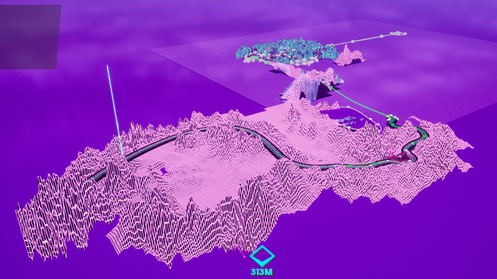
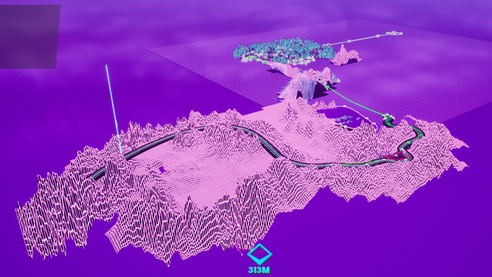
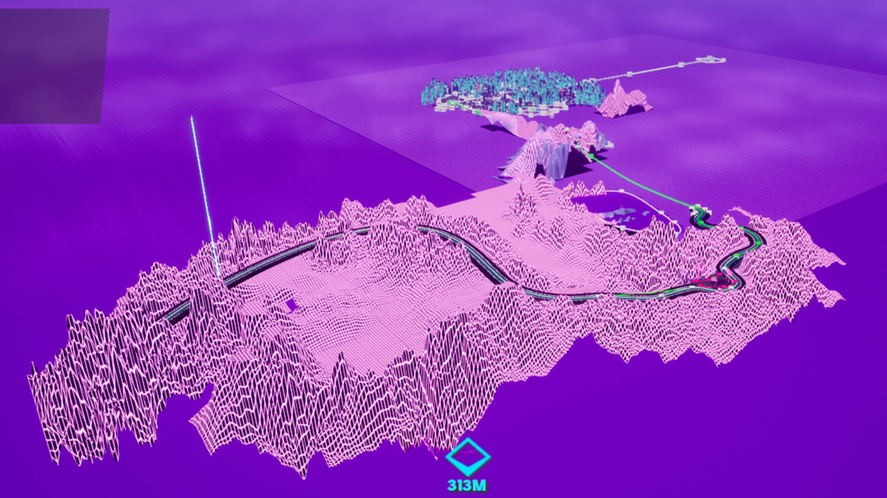

Gallery
Images


 

Gifs


This is my first professional project in the games industry. This is still a work in progress, and is currently waiting for more funding before it can be continued.
This showcases 8 months of the teams work, with all the game design, blueprint functionality including, the player (car), waypoints, number plate changing to correspond with the drivers action, as well as level structure.
I also had weekly meetings with another member and mentor to discuss the game design for the project as well as the projects progression.
The team would have regular playtest sessions, and the feedback on the car would be reworked and tweaked as necessary. Compared to the UE5 default Chaos vehicle, a lot of changes were implemented to get it to play as it does in this build.
In this build the player has to navigate the mountain into the main city, collecting the blue beacons/waypoints as a guide.
After this a set of red beacons will appear, same principle. Once the player collects the final one, they are ambushed by the police.
Once they escape they are tasked with locating the green beacon within the allotted time. If the player achieves this they will get a different line of dialogue.
If not then the player will be given additional beacons to help guide them to the end of the level.
This acts as a soft win, lose condition.
After this the player is then teleported to the past, here the player must complete the race doing so will cause a change in the main city of the distant future, allowing the player to proceed.

"Courtesy of Retrodrive Ltd, all content and rights are reserved and RetroDrive © "